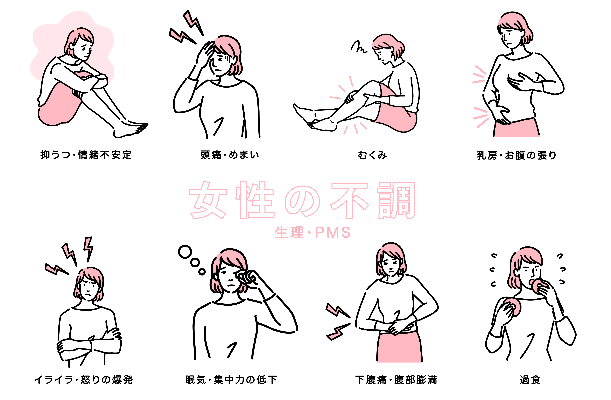

生理痛について
生理痛に悩む女性は多くいますが、他人には伝えにくく、一人で抱え込んでしまうこともあります。けれど、生理痛を放置せず、対処法を見つけることで、毎月をもっと快適に過ごせるようになります。
まずは、自分の症状を把握し、リラックスやアロマテラピーなど自分のための対処法を試してみましょう。それでも改善しない場合は、ためらわず婦人科を受診してください。痛みを軽減することは、自分の生活をより充実させる第一歩です。生理期間を無理なく乗り越え、より良い毎日を目指しましょう。

主な生理痛の症状
下腹部や腰の鈍い痛みが一般的ですが、頭痛や吐き気、下痢などの消化器症状が現れることもあります。また、全身のだるさや疲労感、イライラなどの精神的な不調を伴う場合もあります。
これらの症状には個人差や生理期間前後の生活習慣や健康状態・精神状態によっても左右され、軽いものから日常生活に支障をきたすほど重い場合もあります。強い痛みが続く場合は、子宮内膜症や子宮筋腫などの病気が隠れていることもあるため、婦人科での相談が必要です。症状を理解し、適切な対処をすることで、生理期間をより快適に過ごすことができます。
生理痛と病気
生理痛が重い場合、子宮の病気が隠れている可能性があるため、少しでも気になる場合は早めに婦人科の医者に診てもらう方が良いでしょう。また、重い生理痛によって日常生活に支障が出る場合は月経困難症である可能性が高いです。
月経困難症には２種類あります。
機能性月経困難症
機能性月経困難症は、特定の病気が原因ではなく、生理中に起こる痛みや不快な症状を指します。主な原因は、月経時に子宮が収縮する際に分泌される「プロスタグランジン」という物質が過剰に働くことです。この作用で下腹部痛や腰痛、吐き気、下痢などが引き起こされます。
痛みは個人差がありますが、症状が重い場合は市販薬や処方薬での対処が可能です。強い痛みや日常生活への影響がある場合は、婦人科での診断を受けることをおすすめします。
器質性月経困難症
器質性月経困難症は、子宮や卵巣に異常がある場合に起こる生理痛を指します。代表的な原因には子宮内膜症や子宮筋腫、子宮腺筋症などがあります。これらの疾患によって、経血が排出されにくくなったり、炎症が起こることで強い痛みが生じることがあります。
通常の生理痛と異なり、痛みが生理期間以外にも続いたり、年々悪化する場合が多いです。放置すると症状が進行する可能性があるため、早めに婦人科を受診し、適切な治療を受けることが重要です。